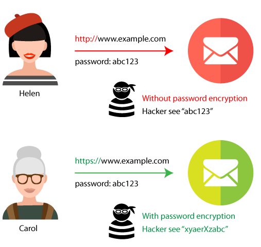
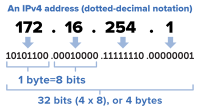

How does the Internet work?
In this tutorial we will talk about DNS, IP, Domain Names,Top level domain names(TLD), how to read a web address,SSL secure website browsing through HTTPS over port 443 and HTTP over port 80, REST and Roy Fielding's dissertation.
1. Laptop and computer is connected to the Wifi which is connected to Internet service provider (ISP) which will be able to connected to multiple networks globally.
a. Protocol: a well known set of rules and standards used to communicate between machines.
2. Every device on the internet in the world have a unique address called Internet Protocol address.
a. The IP address is just an a number and it it similar like a home address.
b.The IP address would be represented in bits.
c. Traditional IP address are 32 bits long with 8 bits from each part which are called IPV4.
d. Traditional hierarchy IP: country network, region network, subnetwork, device.
e. In IPV6: It is a multi year which has 128 bits which provides 340 undecillion unique address.
3. To visit a website one device is asking another device for information. One device will send its IP address then receive its origin address so it would easier for the devices to understand where to send their information.
4. Domain Name systems (DNS) associates websites name to its ip address.
a. For example, I will type up facebook.com and the DNS will find the correct IP address to the destination address.
5. You need to be careful of DNS spoofing which is when a hacker types into the DNS server and changes to match the main name with the wrong IP address and this will make you regard a fake website.
6. You need to be careful of DNS spoofing which is when a hacker types into the DNS server and changes to match the main name with the wrong IP address and this will make you regard a fake website.
7.To access the web you use a web browser by writing the url.
8. The computer talks to another server by communicating to each other called http.
9.The server will send a get request to get the website it needs to get all the html code they need.
a. Go to facebook.com it will go to facebook server then you will get all the html code from that website.
b. Images and videos are separate files with unique urls so you need to a get a get request text in order to get that html.
10. If the user hasl send a http post request by adding cookies.
a. The user will use this request when they are filling out surveys or searching something.
11. Cookies will be used by remeing who you are every time you use the internet.
a.The user will use this request when they are filling out surveys or searching
12. The ssl secure website prevents snooping and tampering by communicating on a secure channel by using secure sockets layer and transport layer
13. The secure sockets layer and transport layer is a layer of security wrapped around your communications.
14. There would be a lock near the https webpage which will indicate if it has a secure connection.
a. While searching a website with a secure connection then it provides a digital certificate.
b. If you searching a website without a secure connection then it will provide a janky certificate and warn you.
15. There are two common types of protocols which called https and http
a. Https is used over a secure website with port 443. Majority of the websites are under https.
b. Port is a logical connection place and will specifically use the internet protocol. Ports will be numbered from 0 to 65535, and the ports 0 to 1024 will be identified as certain privileged uses
c. Https with port 443 will allows users to send or receive their information with encrypted connection which means hackers will see your password encrypted
d. Http with port 80 will allow users to send or receive information with no encrypted connection which means hackers will your password as it is. (Not a secure website)
16. The ssl secure website prevents snooping and tampering by communicating on a secure channel by using secure sockets layer and transport layer
a. Independent: If either the client or server changes the code it won’t affect anything
b. Staless: server does not need to know anything about what state the client is in and vice versa
c. clients send requests to retrieve or modify resources, and servers send responses to these requests
d. The format to send requests are http verb {get, post, put, delete}, a header {to allow the client to send their message about their request}, a path to resource and and optional message about the data.
e.Rest is being very common these days
17. Roy Fielding is an American computer scientist who is the originator of rest. He helped the computer science world by adding this factor and making everyone life so much easier.
Roy T. Fielding
What is SSL?

Example of http vs https


<